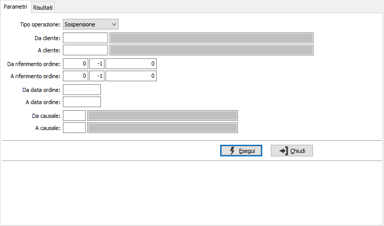
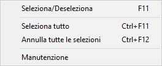
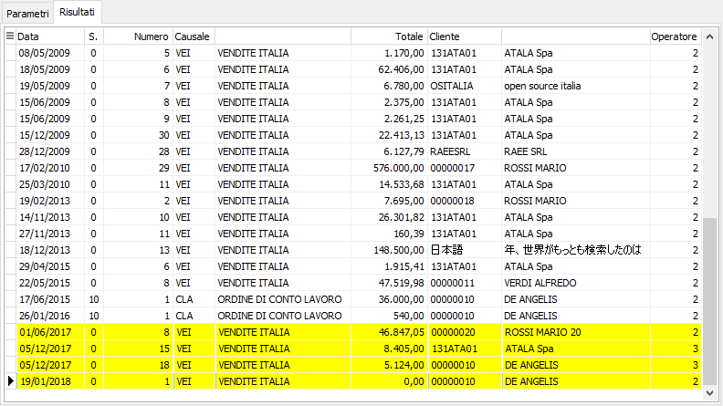

Approvazione/Sospensione ordini
Il programma consente la sospensione/accettazione degli ordini. L'accettazione dell'ordine valorizza i campi operatore e data accettazione presenti sulla testa dell'ordine; se l'utente non è abilitato ad accettare gli ordini non sarà consentito l'accesso alla procedura; se l'utente ha un limite di importo saranno visualizzati solo i documenti al di sotto del limite, se l'utente è un responsabile saranno visualizzati anche gli ordini degli utenti per cui è indicato come responsabile.
Gli ordini sospesi non possono essere evasi o dar luogo alla generazione di altri documenti, non potranno essere saldati, non potranno essere oggetto di conferma di annullamento e gli acconti eventualmente presenti non saranno considerati.
Gli ordini che arrivano dalla generazione eCommerce e da OS1Mobile sono considerati sempre approvati.
Il programma si articola su due finestre video. La prima, Parametri, consente la definizione dei parametri di selezione.

TIPO OPERAZIONE: consente di indicare se si vuole effettuare la sospensione o l'approvazione degli ordini che si andranno a selezionare.
DA CLIENTE: eventuale codice del cliente, presente in anagrafica clienti, da cui si vuole iniziare la selezione di analisi. Confermando a vuoto, la selezione inizia dal primo cliente valido. Sul campo sono attive le funzioni di ricerca (F9).
A CLIENTE: eventuale codice del cliente, presente in anagrafica clienti, con cui si vuole terminare la selezione di analisi. Confermando a vuoto, la selezione termina con l’ultimo cliente valido. Sul campo sono attive le funzioni di ricerca (F9).
DA RIFERIMENTO ORDINE: indicare anno, serie (-1 tutte), e numero da cui iniziare l'elaborazione.
A RIFERIMENTO ORDINE: indicare anno, serie (-1 tutte), e numero con cui terminare l'elaborazione.
DA DATA ORDINE: eventuale data del documento da cui deve iniziare l’analisi dei documenti relativamente ai precedenti parametri di selezione. Confermando a vuoto, l’analisi inizia con il primo documento valido.
A DATA ORDINE: eventuale data del documento con cui si desidera terminare l’analisi dei documenti relativamente ai precedenti parametri di selezione. Confermando a vuoto, l’analisi si conclude con l'ultimo documento valido.
DA CAUSALE: codice della causale documento da cui si vuole iniziare la selezione. Confermando a vuoto, la selezione inizia dalla prima causale valida. Sul campo sono attive le funzioni di ricerca (F9).
A CAUSALE: codice della causale documento con cui si vuole iniziare la selezione. Confermando a vuoto, la selezione termina all’ultima causale valida. Sul campo sono attive le funzioni di ricerca (F9).

Confermando tramite pressione del bottone Esegui, viene avviata la selezione e richiamata la finestra video Risultati dove saranno riportati gli ordini da approvare/sospendere in base ai limiti inseriti ed al tipo di utente. L'utente può selezionare o deselezionare gli ordini da approvare/sospendere tramite il doppio clic del mouse, il tasto F11 o mediante il menù riportato a lato richiamabile con il pulsante destro del mouse; è anche possibile accedere direttamente al documento selezionando "Manutenzione".
Una volta effettuate le necessarie selezioni, premendo il pulsante Salva presente nella Toolbar sarà possibile effettuare il salvataggio definitivo, previa conferma.